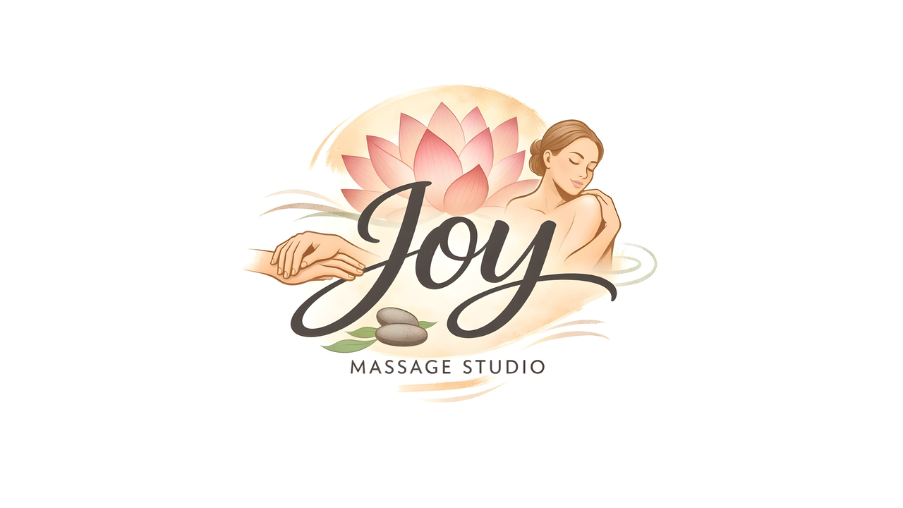
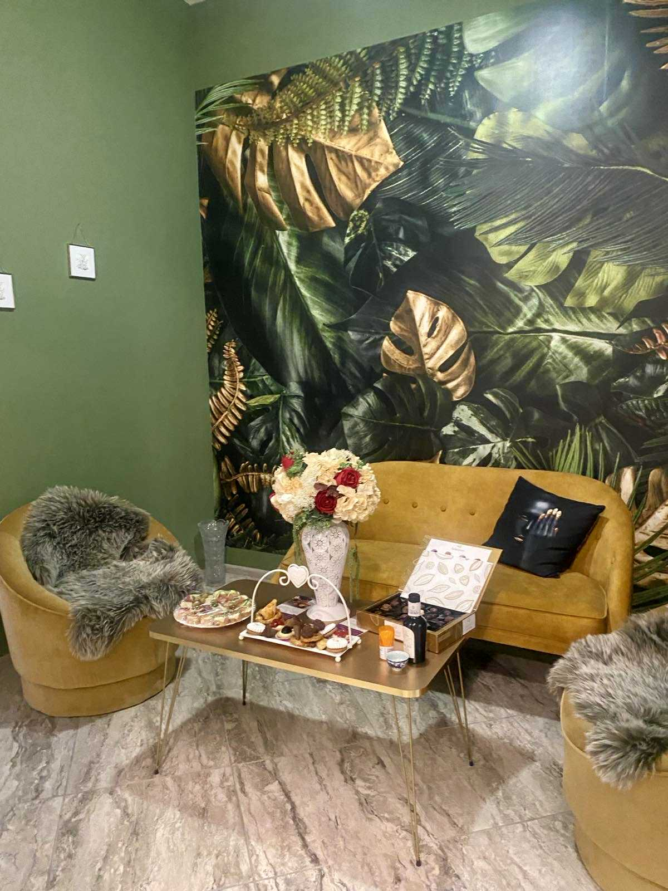
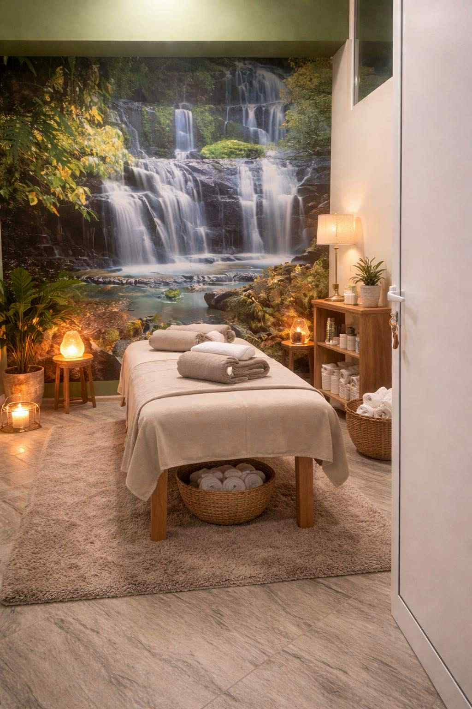
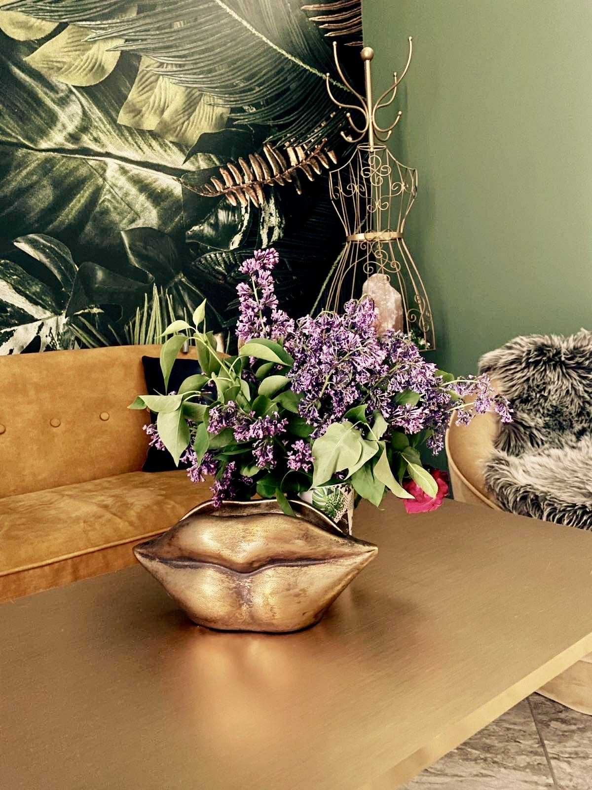
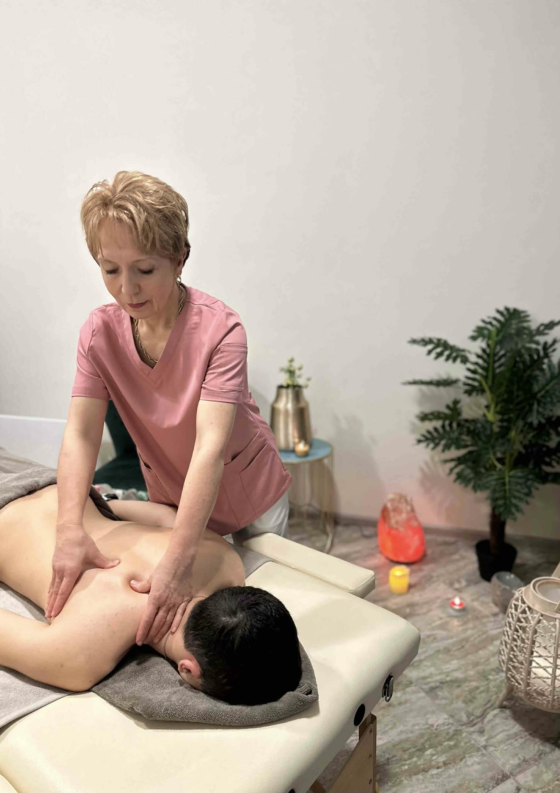

Професионална масажна терапия за вашите нужди.
Запишете час



Здравейте! Аз съм сертифициран масажист, предлагащ широк спектър от процедури за релакс, здраве и красота. Притежавам дългогодишен опит в сферата на СПА услугите, придобит в едни от най-големите СПА центрове в страната! Работя с голяма всеотдайност и използвам висококачествени продукти, подбрани с грижа за вас!
Класическият масаж е доказан и ефективен метод за релаксация и възстановяване на тялото. Чрез плавни и дълбоки техники той отпуска мускулите, подобрява кръвообращението и намалява натрупания стрес. Масажът спомага за облекчаване на болки в гърба, врата и раменете, подобрява подвижността и тонуса на тялото и действа изключително благоприятно върху нервната система. Препоръчва се при мускулни напрежения, хронична умора, стрес, безсъние, главоболие, проблеми с кръвообращението, както и при възстановяване след физическо натоварване. Класическият масаж е отличен избор както за профилактика, така и за цялостно подобряване на здравето и доброто самочувствие.
Запишете часЧувствате ли напрежение в гърба или тежест в краката след дълъг и натоварен ден? Класическият частичен масаж на гръб или крака е създаден точно за вас – за моментите, в които тялото ви моли за грижа и внимание. С професионални и целенасочени техники освобождавам натрупаното напрежение, облекчавам болката и възвръщам лекотата в най-натоварените зони. Това не е просто масаж, а лично отношение и грижа, съобразени изцяло с вашите нужди. Подарете си време за себе си и усетете разликата още след първата процедура
Запишете часАроматерапевтичният масаж с етерични масла е истинско пътешествие за сетивата и ума. Нежните масажни движения, съчетани с висококачествени натурални масла, проникват дълбоко в тялото, освобождават напрежението и възстановяват вътрешния баланс. Всеки аромат е внимателно подбран, за да успокои, зареди с енергия или хармонизира емоциите според индивидуалните нужди. Този масаж не е просто удоволствие, а цялостно преживяване, което подобрява съня, намалява стреса, засилва имунитета и оставя усещане за лекота и обновление. Позволете си момент на лукс и грижа – вашето тяло и ум ще ви се отблагодарят.
Запишете часУсещате ли скованост във врата и напрежение в раменния пояс? Масажната яка предлага модерно и фино решение за дълбоко отпускане на тази чувствителна зона. Чрез ритмични и затоплящи масажни техники тя стимулира мускулатурата, подобрява циркулацията и създава приятно усещане за разтоварване и комфорт.Това е специално подбрана терапия с акцент върху детайла и качеството – създадена за клиенти, които търсят нещо повече от стандартна услуга. Подарете си заслужено внимание и се уверете сами защо тази процедура е любима на хората, които ценят професионалната грижа и истинското отпускане.
Запишете часАнтицелулитният масаж е повече от разкрасяваща процедура – той е целенасочена грижа за женското тяло, самочувствие и вътрешен баланс. С професионални техники и индивидуален подход се стимулира кръвообращението и лимфният дренаж, подпомага се разграждането на мастните натрупвания и кожата става по-гладка, стегната и видимо освежена.Тук всяка дама получава внимание, разбиране и експертна грижа, съобразена с нуждите на нейното тяло. Процедурата не само оформя силуета, но и освобождава натрупаното напрежение, подобрява тонуса и носи усещане за лекота и увереност. Подарете си този момент за себе си – защото да се грижите за външната си красота означава да уважавате и вътрешната. Това е инвестиция в вас, която се усеща, вижда и заслужава.
Запишете часМасажът на глава е деликатна и дълбоко релаксираща процедура, която освобождава психическото напрежение и натрупаната умора.
От медицинска гледна точка масажът стимулира микроциркулацията в скалпа, подобрява оксигенацията на тъканите и подпомага нормалната функция на централната нервна система.
Благодарение на подобреното трофично кръвоснабдяване и метаболизма на кожата, процедурата може да подпомогне жизнеността на космените фоликули и да създаде по-благоприятна среда за растеж на косата.
Запишете часTерапевтичният масаж на гръб с мед е специфична апитерапевтична процедура, която съчетава мануална техника с биологично активните свойства на висококачествен натурален пчелен мед. По време на масажа медът действа като естествен проводник, подпомагащ трансдермалната абсорбция на микроелементи, ензими и антиоксиданти, като едновременно с това стимулира кожните рецептори и рефлексните зони на гърба.Процедурата има изразено детоксикиращо и противовъзпалително действие, подобрява локалната микроциркулация и лимфния дренаж, повлиява благоприятно мускулни контрактури, хронични напрежения и функционални оплаквания в гръбначната област. Използваният мед е с доказан произход и лечебни качества, което гарантира безопасност, ефективност и високо терапевтично ниво на масажа. Особено ефективен при белодробни заболявания, артрози, чернодробни нарушения, възстановяване след тежки боледувания, безсъние, преумора и други.
Запишете часСпортният дълбокотъканен масаж е интензивна и целенасочена терапия, създадена за активно тяло и натоварени мускули. Чрез прецизни, бавни и дълбоки техники се освобождават хронични напрежения, мускулни възли и фасциални ограничения, като се подобрява подвижността и възстановяването.Подходящ е както за спортисти, така и за хора с физически натоварено ежедневие, тъй като ускорява регенерацията, намалява риска от травми и връща силата и баланса на тялото. Това е масаж за реален резултат – усещан и дълготраен.
Запишете часМасажът на крака с мед е специализирана терапия, насочена към активиране на естествените очистващи механизми на организма чрез въздействие върху периферната циркулация. Висококачественият натурален пчелен мед, използван по време на процедурата, притежава силни биологично активни свойства и действа като естествен сорбент, подпомагащ извеждането на токсини през кожата.Масажът се изпълнява чрез характерни ритмични притискащо-отлепващи движения, редувани с бавни дренажни плъзгания и пулсиращи компресии, които активно стимулират лимфния ток и венозното връщане. Тази специфична техника подобрява тъканния метаболизъм, намалява усещането за тежест и отоци и подпомага регенеративните процеси в долните крайници. Медът допринася с изразено противовъзпалително, антибактериално и възстановяващо действие, превръщайки процедурата в ефективна и медицински обоснована терапия за уморени и претоварени крака.
Запишете часЛечебно-възстановителният масаж на гръб + вендузи е силна, дълбоко въздействаща терапия, която „събужда“ тъканите и активира вътрешните оздравителни ресурси на организма. Чрез контролиран вакуумен ефект се създава интензивна хиперемия, която буквално рестартира микроциркулацията, отпушва застойните зони и освобождава дълбоко закодирано мускулно и фасциално напрежение.Вендузите работят на ниво съединителна тъкан и нервно-рефлекторни зони, стимулирайки лимфния дренаж, детоксикацията и регенерацията на мускулите. Терапията е особено ефективна при хронични болки в гърба и кръста, дископатии, миогелози, шипове, схващания, посттравматични състояния и продължително заседяване. Подобрява подвижността на гръбначния стълб, облекчава възпалителни процеси и оказва мощно влияние върху автономната нервна система.Това не е просто масаж, а дълбока тъканна интервенция с възстановителен характер – процедура за хора, които търсят реален ефект, осезаемо облекчение и терапия с характер и сила.
Запишете часРефлексотерапията на стъпала е холистична терапия, която въздейства върху цялото тяло чрез специални зони, разположени по ходилата. Чрез прецизни точкови натискания се стимулират нервните окончания и се активират естествените саморегулиращи механизми на организма. Процедурата подпомага функциите на вътрешните органи, подобрява кръвообращението, намалява стреса и възстановява енергийния баланс. Подходяща е при умора, напрежение, хормонален дисбаланс и общо изтощение, като носи дълбоко усещане за лекота и хармония в цялото тяло. В обобщение рефлексотерапията или наречена още зонотерапия, представляват един и същ ефикасен метод за цялостно здраве.
Запишете часКралският масаж е цялостен ритуал за тяло и съзнание, който обхваща всяка зона – от ходилата до лицето и главата. Това е луксозна терапия „от глава до пети“, създадена да възстанови хармонията в тялото, да отпусне дълбоките напрежения и да подари усещане за пълно презареждане. Съчетани са плавни, дълбоко релаксиращи техники за цялото тяло с прецизна работа върху лицето, скалпа и ходилата – зони с ключово значение за нервната и енергийната система. Процедурата подобрява кръвообращението, стимулира лимфния поток, изглажда чертите на лицето, успокоява ума и оставя усещане за лекота, баланс и изтънчен лукс. Кралският масаж е преживяване, в което всеки детайл е грижа, а всяко докосване – внимание от най-висок клас
Запишете часМасаж, насочен към почистване, подхранване и подмладяване на кожата на лицето. Подобрява кръвообращението и лимфния дренаж. Стимулира обновяването на кожните клетки. Повишава тонуса и еластичността на кожата. Резултатите са по-хидратирана и гладка кожа, свеж тен и комфорт, благодарение на използваното от нас био Шипково масло лукс.
Запишете часМануалният антицелулитен масаж комбинира дълбоки ритмични техники за разбиване на мастните натрупвания, стимулиране на кръвообращението и лимфния дренаж, което спомага за изглаждане на кожата и подобряване на тонуса. Масажът с вендуза допълва ефекта чрез вакуумно въздействие, което активира тъканите в дълбочина и засилва стягането на кожата.
Запишете час